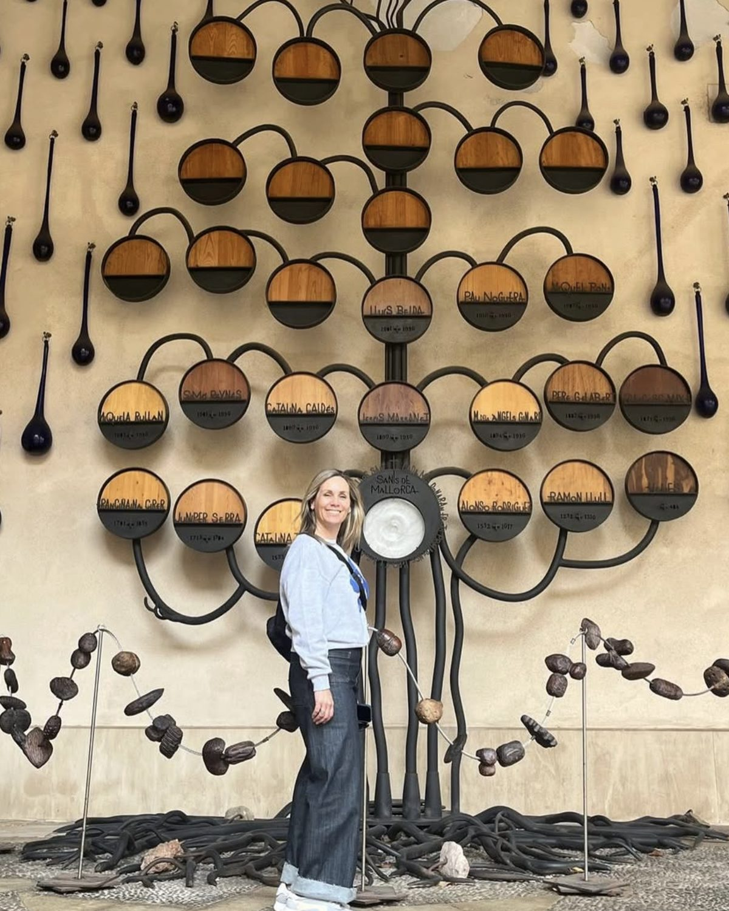
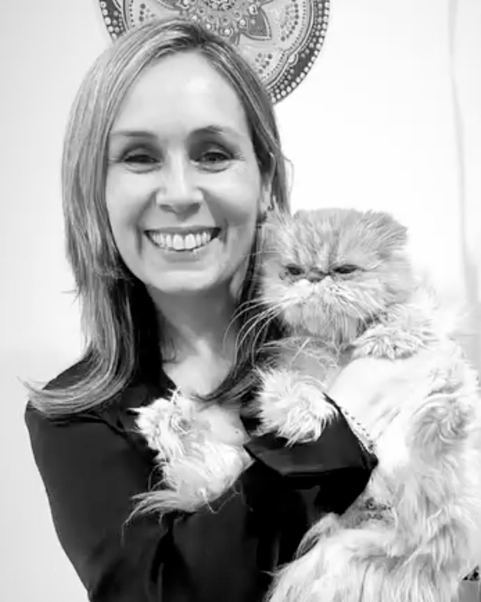

Cuando entendés lo que te pasa, podés soltarlo.
Sesiones de Bioneuroemoción, online y presenciales en Vicente López, para mirar el origen emocional de lo que hoy te pesa.

Qué es la Bioneuroemoción
Es un método de acompañamiento emocional que parte de una idea simple: muchos de nuestros malestares tienen un sentido. Detrás de un síntoma, una emoción que se repite o un vínculo que duele, casi siempre hay una historia que todavía no pudimos ver.
En las sesiones vamos a ese origen. No para quedarnos en el pasado, sino para entenderlo y poder darle otro lugar.
-
Miramos el origen, no solo el síntoma
Buscamos de dónde viene eso que sentís, en tu historia y en la de tu familia.
-
Un espacio sin juicio
Todo lo que traés tiene lugar. Mi trabajo es acompañarte a mirarlo con calma.
-
Algo concreto para la vida diaria
Cada sesión cierra con una observación para sostener entre un encuentro y el otro.
En qué te puedo acompañar
Algunos de los motivos por los que las personas empiezan un proceso conmigo.
Duelos y pérdidas
Acompañar el proceso de despedir a alguien o algo, a tu ritmo.
Ansiedad y estrés
Entender qué sostiene ese estado de alerta y empezar a bajar un cambio.
Vínculos que duelen
Pareja, familia o trabajo: relaciones que se repiten siempre en el mismo lugar.
Bloqueos y decisiones
Cuando algo importante está frenado y no terminás de ver por qué.
Situaciones que se repiten
Patrones y malestares recurrentes, mirados desde el sentido que puedan tener.
Autoconocimiento
Un espacio para conocerte mejor, incluso sin una crisis puntual.
De tu primer mensaje a tu primera sesión
-
01
Escribís y coordinamos
Me contás en dos líneas qué te trae y buscamos día y horario. Elegís online o presencial en Vicente López.
-
02
Nos encontramos 1 a 1
Un encuentro tranquilo, de alrededor de una hora, donde vamos a lo que traés sin apuro.
-
03
Te llevás algo para trabajar
Cerramos con una lectura de lo que apareció y una consigna concreta para sostener hasta la próxima.
Hola, soy Ingrid
Soy coach especializada en Bioneuroemoción. Acompaño a personas que están atravesando un duelo, una etapa de cambio o un malestar que se repite y quieren entender qué hay detrás.
Trabajo de forma individual, con escucha y sin fórmulas. Creo en los procesos de a uno, en el tiempo de cada persona y en el valor de poder nombrar lo que duele.
- Coach formada en Bioneuroemoción, en formación continua dentro del enfoque.
- Sesiones individuales, online y presenciales en Vicente López.
- Trabajo centrado en duelos, vínculos y procesos de cambio.

Dos formas de encontrarnos
Online
Por videollamada, estés donde estés. Solo necesitás un lugar tranquilo y una hora para vos.
Presencial en Vicente López
Nos encontramos en un espacio pensado para eso, en Vicente López, Buenos Aires. La dirección exacta te la paso al coordinar.
Lo que cuentan quienes ya hicieron su proceso
Llegué por un duelo que no podía nombrar. Salí de las sesiones pudiendo hablar de eso sin que me tiemble la voz.
Carla M. Proceso presencial, Vicente LópezIngrid tiene una forma de escuchar que te deja en calma desde el primer minuto.
Damián R. Proceso onlineEntendí patrones de mi familia que venía repitiendo sin darme cuenta. Cambió cómo me paro frente a las cosas.
Sofía T. Proceso onlinePreguntas frecuentes
¿Necesito estar en crisis para empezar?
No. Podés venir por algo puntual que te preocupa o simplemente por querer conocerte mejor y ordenar una etapa.
¿Cuánto dura cada sesión?
Alrededor de una hora. El detalle lo coordinamos según cada caso cuando escribís.
¿Online funciona igual que presencial?
Sí. El trabajo es el mismo. Muchas personas hacen todo su proceso por videollamada, sin diferencia en los resultados.
¿Cada cuánto son los encuentros?
Depende de cada persona. Suele ser cada una o dos semanas, y lo vamos ajustando juntas a medida que avanza el proceso.
¿La Bioneuroemoción reemplaza la terapia psicológica o un tratamiento médico?
No. Es un acompañamiento complementario. Si estás en tratamiento psicológico o médico, la idea es que lo sigas sosteniendo.
Si algo de esto te resonó, escribime
Contame en un par de líneas qué te está pasando y coordinamos una primera sesión.
Reservar sesiónO por mail: solisingrid80@hotmail.com